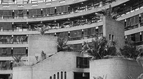
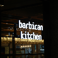
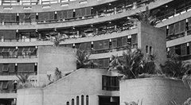
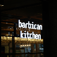
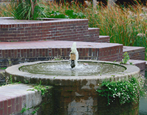
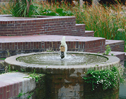

About us
PURPOSE
AND
GOVERNANCE
The Barbican holds a special position as the arts centre located within the City of London, as well as in the national and international landscape in which we operate.
 




 

We are in an important position of trust – with our audiences, with artists and companies we work with, local communities, donors, partners, sponsors, and funders. And of course, with our Barbican Team who welcome audiences and artists into our spaces every day.
We are governed by the Barbican Centre Board – a committee of the City of London Corporation, our founder and principal funder. At all times we aim to work in accordance with our purpose and values, using our spaces and resources for public benefit.
At the Barbican everybody is welcome, and should be treated equitably, with honesty and respect. We expect everybody – whether working, visiting, or performing – to abide by our Zero Tolerance Statement. Additionally, Barbican staff must adhere to the City of London’s Code of Conduct.
Our purpose and values
Our purpose and values expresses why we do what we do. All of our activities are designed to help deliver our purpose:
We are London’s Creative Catalyst for arts, curiosity and enterprise.
We spark creative possibilities and transformation for artists, audiences and communities –
to inspire, connect and provoke debate.
We are the place to be in this destination city, where everyone is welcome. Our impact is felt
far outside our walls and ripples beyond the experiences we offer - locally, nationally and internationally.
Our values express how we work. We aim to live our values every day:
Inclusive, Sustainable, Connected, Daring, Joyful